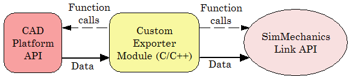

Warning
This content is specific to Simscape™ Multibody™ First Generation software. First-generation features are slated to be deprecated and should be avoided.
A custom exporter module works with intermediate representations of CAD assembly data. For an overview of the types of CAD assembly and Simscape Multibody Link data and their relationship, see Custom Translation into an XML Multibody Description File.
A custom exporter module:
Issues function calls to the APIs of both the CAD platform and the Simscape Multibody Link utility.
Transfers assembly representation data from the assembly, through the CAD API, to the XML multibody description file, through the Simscape Multibody Link API.
Custom Exporter Module Communicates with APIs (Detail)

The Simscape Multibody Link API is a library of API functions that you call to construct a unified, selective representation of an assembly and write it as an XML file. Program Custom Exporter with Simscape Multibody Link API describes how to create, compile, and execute custom exporter modules in C/C++ with the Simscape Multibody Link API function library.
To extract the selected assembly data required for export, consult your CAD platform API documentation and determine which functions of the CAD platform API you need to accomplish this.
To construct the intermediate representation of an assembly, use the following functions from the Simscape Multibody Link API, in the order shown. The API also contains other functions you might need in special cases. For more information, consult the Simscape Multibody Link Reference documentation.
| Step | To... | Use Simscape Multibody Link API Function... | ...and Simscape Multibody Link API Objects |
|---|---|---|---|
| 1. | Set length and mass units for CAD assembly. The defaults are meters (m) and kilograms (kg), respectively. | pmit_set_units | — |
| 2. | a. Create CAD model object to contain data for CAD assembly | pmit_create_cadmodel | PmitCadModelH |
| b. Create API representation translator object | pmit_create_cad2sm | PmitCad2SMH | |
| 3. | Set translational, rotational, and numerical tolerances for CAD assembly | pmit_set_tolerances | PmitCad2SMH |
| 4. | a. Create object to contain data for CAD subassemblies and parts | pmit_create_cadmodel | PmitCadModelH |
| b. Create reference to CAD model object | pmit_create_cadmodelref | PmitCadModelH, PmitCadModelRefH | |
| c. Add reference within existing CAD model object to child model object by adding transform | pmit_add_refincadmodel | PmitCadModelH, PmitCadModelRefH | |
| 5. | a. Create object to contain data for CAD assembly component (part or rigid subassembly) | pmit_create_assemcomp | PmitAssemCompH |
| b. Add reference within existing CAD model object to child assembly component object | pmit_add_refincomp | PmitAssemCompH, PmitCadModelRefH | |
| 6. | a. Create object to contain data for constraint between CAD components (parts or rigid subassemblies) | pmit_create_constrain | PmitAssemCompH, PmitConstrainH,PmitConstrainType, PmitGeomType |
| b. Add constraint object to CAD model object | pmit_add_constrain | PmitCadModelH, PmitConstrainH |
To export the selective representation of your assembly into an XML multibody description file, use the following functions from the Simscape Multibody Link API, in the order shown.
| Step | To... | Use Simscape Multibody Link API Function... | ...and Simscape Multibody Link API Objects |
|---|---|---|---|
| 1. | Enable the translation of CAD assembly data into a Simscape Multibody model | pmit_create_cad2sm | PmitCad2SMH |
| 2. | Write an XML multibody description file from selective CAD representation of assembly | pmit_write_xml | PmitCad2SMH |
For detailed information on the programming of a custom export module with the Simscape Multibody Link API, see Program Custom Exporter with Simscape Multibody Link API